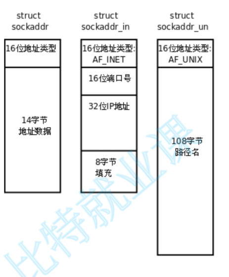

Socket
概念
套接字（Socket）是一种用于在计算机之间进行通信的软件组件或接口。它提供了一种标准化的方式，使得应用程序能够通过网络连接进行相互之间的通信。可以理解为一套用于网络通信的系统调用。
套接字有以下几种：
-
unix socket: 域间通信，通过文件路径实现同一台设备上不同进程间的通信。
-
网络 socket: ip + port 的方式实现网络通信
-
原始 socket: 用于实现一些网络工具。
Socket 接口
创建
用下面函数可以创建一个 socket 文件。
#include <sys/types.h> /* See NOTES */
#include <sys/socket.h>
// 创建 socket 文件描述符
int socket(int domain, int type, int protocol);
-
domain：指定套接字的协议族，可以是AF_INET（IPv4）、AF_INET6（IPv6）、AF_UNIX（UNIX域套接字）等。 -
type：指定套接字的类型，可以是SOCK_STREAM（流式套接字，用于TCP协议）、SOCK_DGRAM（数据报套接字，用于UDP协议）等。 -
protocol：指定协议类型，可以是IPPROTO_TCP（TCP协议）、IPPROTO_UDP（UDP协议）等。通常设置为0，让系统自动选择合适的协议。
返回值为 socket 的文件描述符。
绑定
在使用 Linux 套接字编程时，创建套接字之后需要将套接字与一个特定的网络地址和端口号绑定 (bind) 起来，这样才能够通过该地址和端口号访问该套接字。
#include <sys/types.h>
#include <sys/socket.h>
#include <netinet/in.h>
int bind(int sockfd, const struct sockaddr *addr, socklen_t addrlen);
-
sockfd：要绑定的套接字文件描述符。 -
addr：指向用于绑定的 sockaddr 结构体变量的指针，包含了网络地址和端口号等信息。
不同的网络协议的地址格式并不相同，我们可以通过强转成struct sockaddr确定同一个类型。

这里 struct sockaddr 相当于基类，用于指向不同协议族的地址格式。如果机器上有多个网卡，可能会有多个 IP 地址，想让程序接收所有 IP 发来的消息，就要在绑定时将 ip 地址设为 INADDR_ANY 或是 0.0.0.0 ，这样就会接收所有发到指定端口的信息。
addrlen：sockaddr结构体的长度。
On success, zero is returned. On error, -1 is returned, and errno is set appropriately.
UDP 接口
UDP（User Data Protocol，用户数据报协议） 套接字是无连接协议，必须使用 recvfrom 函数接收数据，sendto 函数发送数据。
- 收数据
#include <sys/types.h>
#include <sys/socket.h>
ssize_t recvfrom(int sockfd, void *buf, size_t len, int flags,
struct sockaddr *src_addr, socklen_t *addrlen);
-
sockfd：这是已经创建并绑定的套接字的文件描述符。 -
buf：这是一个指向缓冲区的指针，用于存储接收到的数据。 -
len：这是缓冲区 buf 的大小，以字节为单位。 -
flags：这是一些标志位，用于修改 recvfrom 的行为。常见的标志位包括 MSG_PEEK（查看当前数据但不从输入队列中删除）和 MSG_DONTWAIT（非阻塞模式，如果没有数据可读则立即返回错误），设为 0 表示阻塞式等待。 -
src_addr：这是一个指向 struct sockaddr 的指针，用于存储发送方的地址信息。如果对这个信息不感兴趣，可以设置为 NULL。 -
addrlen：这是一个指向 socklen_t 的指针，用于存储 src_addr 结构体的实际大小。在调用 recvfrom 之前，你应该将这个值设置为 src_addr 结构体的大小（例如，对于 IPv4 地址，可以使用 sizeof(struct sockaddr_in)）。 -
发数据
#include <sys/types.h>
#include <sys/socket.h>
ssize_t sendto(int sockfd, const void *buf, size_t len, int flags,
const struct sockaddr *dest_addr, socklen_t addrlen);
sockfd：已经创建好的socket文件描述符。buf：指向要发送数据的缓冲区。len：要发送的数据的长度。flags：发送时使用的标记，通常设置为0。dest_addr：指向要发送数据的网络地址的结构体指针（如struct sockaddr_in）。addrlen：dest_addr结构体的长度。
echo server by UDP
分文件编写，makefile 构建，实现用户端输入什么，服务端返回什么。
#include <string>
#include <sys/types.h>
#include <sys/socket.h>
#include <netinet/in.h>
#include <arpa/inet.h>
#include <strings.h> // for bzero()
#include <iostream>
#include <sys/types.h>
#include <unistd.h>
class udp_server
{
std::string _ip;
uint16_t _port;
int _socketfd;
public:
udp_server(std::string ip,uint16_t port)
:_ip(ip)
,_port(port)
{
// 创建套接字文件
_socketfd = socket(AF_INET,SOCK_DGRAM,0);
if(_socketfd < 0)
{
std::cerr << "Socket build failed." << std::endl;
exit(0);
}
// 绑定 ip + port
sockaddr_in local;
bzero(&local,sizeof(local)); // memset()
local.sin_family = AF_INET;
local.sin_port = htons(_port);
local.sin_addr.s_addr = inet_addr(_ip.c_str());
int ret = ::bind(_socketfd,(sockaddr*)&local,sizeof(local));
if(ret != 0)
{
std::cerr << "Socket bind failed." << std::endl;
exit(0);
}
}
void start()
{
char buffer[1024];
for(;;)
{
sockaddr_in sender;
socklen_t len = sizeof(sender);
ssize_t n = recvfrom(_socketfd,buffer,sizeof(buffer) - 1,0,(sockaddr*)&sender,&len);
if(n > 0)
{
buffer[n] = 0;
std::cout << "client say #" << buffer << std::endl;
// 原样发回去
sendto(_socketfd,buffer,n,0,(sockaddr*)&sender,len);
}
}
}
};
int main(int argc,char* argv[])
{
// 服务端的 ip 和端口
std::string ip(argv[1]);
uint16_t port = atoi(argv[2]);
udp_server server(ip,port);
server.start();
return 0;
}
#include <sys/types.h>
#include <sys/socket.h>
#include <netinet/in.h>
#include <arpa/inet.h>
#include <iostream>
#include <strings.h> // for bezero
#include <string>
int main(int argc,char* argv[])
{
// 服务端的 ip 和端口
std::string ip(argv[1]);
uint16_t port = atoi(argv[2]);
// 选择 UDP 协议
int sockfd = socket(AF_INET,SOCK_DGRAM,IPPROTO_UDP);
if(sockfd < 0)
{
std::cerr << "Socket build failed." << std::endl;
exit(0);
}
/**
* 用户端的 Socket 也要绑定（bind）ip 和 port，但是不需要我们显示绑定
* 要 OS 自动分配端口给我们的进程
* 这是因为我们 OS 中会有很多进程，用户自己分配端口的话很容易遇到端口被占用的问题
* 在我们第一次向 服务器 发送信息时， OS 会为我们自动分配一个空闲端口。
*/
std::string msg;
sockaddr_in recver;
bzero(&recver,sizeof(recver));
recver.sin_family = AF_INET;
recver.sin_addr.s_addr = inet_addr(ip.c_str());
recver.sin_port = htons(port);
socklen_t len = sizeof(recver);
char buffer[1024];
for(;;)
{
std::cout << "Please say somthing#";
std::cin >> msg;
ssize_t n = sendto(sockfd,msg.c_str(),msg.size(),0,(sockaddr*)&recver,len);
if(n > 0)
{
// UDP 是一种全双工的通信方式
int ret_n = recvfrom(sockfd,buffer,sizeof(buffer) - 1,0,(sockaddr*)&recver,&len);
if(ret_n > 0)
{
buffer[n] = 0;
std::cout << "Server return#" << buffer << std::endl;
}
}
}
return 0;
}
TCP 接口
TCP（Transport Control Protocol，传输控制协议） 是一种有连接的可靠传输协议，在做数据交换前要先进行连接。
- 监听
让执行流监听指定 socket 文件描述符，以接收客户端发起的连接请求。
-
sockfd：需要设置为监听模式的套接字描述符
-
backlog：指定等待连接队列的最大长度，即同时能够处理的客户端连接请求的最大数量，超过这个数量的连接请求将被拒绝
-
创建连接
accept函数用于从处于监听状态的套接字队列中取出一个已经完成了三次握手的连接请求，并创建一个新的套接字用于与客户端进行通信。
#include <sys/types.h> /* See NOTES */
#include <sys/socket.h>
int accept(int sockfd, struct sockaddr *addr, socklen_t *addrlen);
-
sockfd：处于监听状态的套接字描述符 -
addr：输出型参数，指向一个 sockaddr 结构体的指针，用于存储客户端的地址信息 -
addrlen：输出型参数，客户端的 addr 结构体的长度，需要在调用前初始化为sizeof(struct sockaddr)
调用成功返回值：返回一个新的套接字描述符，用于与客户端进行通信，这个新的套接字描述符是唯一的，只能用于与这个客户端进行通信。调用失败返回值：失败返回-1，并设置errno变量以指示错误类型。
- 建立连接
connect函数用于客户端与服务器建立连接，自动帮客户端的套接字与其ip、port进行绑定。
#include <sys/types.h> /* See NOTES */
#include <sys/socket.h>
int connect(int sockfd, const struct sockaddr *addr,
socklen_t addrlen);
-
sockfd：需要连接的套接字描述符。
-
addr：指向目标地址的指针，包括目标计算机的IP地址和端口号。
-
addrlen：addr结构体的长度，需要在调用前初始化为sizeof(struct sockaddr)
调用成功返回值：返回0。调用失败返回值：失败返回-1，并设置errno变量以指示错误类型。
- 收发数据
可以直接使用 read 和 write 来收发数据。也有专门的接口：
#include <sys/types.h>
#include <sys/socket.h>
ssize_t send(int sockfd, const void *buf, size_t len, int flags);
ssize_t recv(int sockfd, void *buf, size_t len, int flags);
send：在建立连接后，向建立连接的 socket 文件中发送 buf 缓冲区者中长度为 len 的数据。flags 填 0 即可。
recv：在建立连接后，从建立连接的 socket 文件中向 buf 缓冲区者中读入长度为 len 的数据。flags 填 0 即可，标识阻塞时接收数据。
其他常见标志位：
-
MSG_OOB（Out-of-Band data）：用于接收带外数据。带外数据是一种紧急数据，通常用于发送紧急信号。 在 TCP 中，带外数据由紧急指针（Urgent Pointer）标记，接收方可以通过设置 MSG_OOB 标志来读取这些数据。
-
MSG_PEEK：允许窥探接收缓冲区中的数据，而不将数据从缓冲区中移除。这意味着后续的 recv 调用仍然可以读取相同的数据。
-
MSG_WAITALL：指示 recv 函数在读取到指定数量的字节之前不会返回。这可以确保接收到完整的数据，但也可能导致函数阻塞，直到接收到所有的数据或发生错误。
-
MSG_DONTWAIT：使 recv 函数在非阻塞模式下工作，如果没有数据可读取，则立即返回，而不是阻塞等待数据。
-
MSG_TRUNC（仅用于套接字选项，例如 recvfrom）：表示返回的数据已被截断。使用该字段后，如果提供的缓冲区小于实际接收到的数据包大小，函数返回的大小是数据包的实际长度，而不是缓冲区的大小。
-
MSG_ERRQUEUE：用于接收错误消息队列中的数据，通常与套接字错误处理相关。
套接字状态
套接字状态是描述 TCP 连接在其生命周期中所处的不同阶段的一个重要概念。每个状态都对应着特定的操作和事件，从连接的建立到连接的关闭。以下是详细描述 TCP 套接字状态的各个阶段：
-
CLOSED：初始状态，表示套接字未被使用。
-
LISTEN：服务器端套接字在侦听连接请求。
-
SYN-SENT：客户端套接字发送了 SYN 请求，等待服务器的 SYN-ACK 响应。
-
SYN-RECEIVED：服务器端接收到 SYN 请求，并发送了 SYN-ACK 响应，等待客户端的 ACK 确认。
-
ESTABLISHED：连接已经建立，双方可以进行数据传输。
-
FIN-WAIT-1：主动关闭方发送了 FIN 包，等待对方的 ACK 确认。
-
FIN-WAIT-2：主动关闭方接收到对方的 ACK 包，等待对方的 FIN 包。
-
CLOSE-WAIT：被动关闭方接收到 FIN 包，发送 ACK 包，并等待应用程序关闭连接。
-
CLOSING：双方几乎同时关闭连接，发送了 FIN 包但尚未接收到对方的 FIN 包。
-
LAST-ACK：被动关闭方在发送了 FIN 包后，等待对方的 ACK 包。
-
TIME-WAIT：主动关闭方在发送了最后的 ACK 包后，等待一段时间以确保对方接收到了 ACK 包，等待两倍的最大报文段寿命（2MSL），然后进入 CLOSED 状态。
socket 选项
我们通过以下函数设置或获取一个 socket 的选项：
#include <sys/types.h>
#include <sys/socket.h>
int getsockopt(int sockfd, int level, int optname,
void *optval, socklen_t *optlen);
int setsockopt(int sockfd, int level, int optname,
const void *optval, socklen_t optlen);
参数说明：
-
socket：要设置选项的套接字描述符。
-
level：选项的级别，决定了选项的类型。常见的级别包括：
SOL_SOCKET：通用套接字选项。
IPPROTO_IP：IPv4 选项。
IPPROTO_IPV6：IPv6 选项。
IPPROTO_TCP：TCP 选项。
IPPROTO_UDP：UDP 选项。
- option_name：要设置的选项名称。不同级别有不同的选项名称，例如：
SOL_SOCKET 下的 SO_REUSEADDR 选项允许地址复用。它通常用于如下场景：
服务器重启：在服务器程序崩溃或重启后，立即重新绑定到相同的地址和端口，以便尽快恢复服务。
多重绑定：允许多个套接字绑定到相同的地址和端口，通常用于多播。
SOL_SOCKET 下的 SO_LINGER 选项用于控制套接字关闭行为。
当 option_name 设置为 SO_LINGER 时，optval 需要是 struct linger 结构体：
如果启用了 SO_LINGER（l_onoff 设置为非零），则 l_linger 决定了延迟关闭的时间：
内核将在经过 l_linger 秒的时间后，将 socket 关闭，不论数据是否发送完成。如果 l_linger = 0，则会向对端发送一个 RST 包，连接的断开会跳过四次挥手。
如果禁用了 SO_LINGER（l_onoff 设置为 0），则套接字关闭时的默认行为是：
在调用 close 函数时，如果有未发送的数据，close 函数会立即返回，但内核会在后台继续尝试发送数据，直到发送完成或重试超时。
-
option_value：指向包含新选项值的缓冲区。对于 get 后两个是输出型参数。
-
option_len：option_value 缓冲区的大小，以字节为单位。
返回值：成功时返回 0，失败时返回 -1，并设置 errno 以指示错误原因。